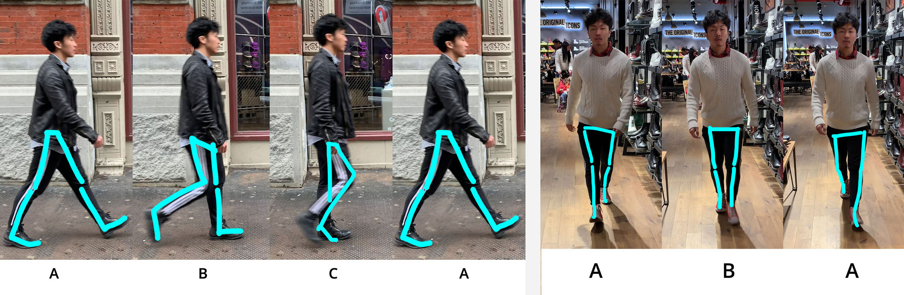

The character’s walking style is not only influenced by its walking habit but also by the shoes it wears. When I made the two reference videos, my friend Daryl wore two different types of shoes: boots and converse all stars. He tended to use more of the back of his feet to land, when wearing boots.
As Daryl walked, his pelvis moved and slightly rotated the same direction as his moving-forward leg.

Homework 3 - Puppy Walking Cycle
Based on my reference video, I notice that the body doesn’t move (or really slightly) up or down.
After drawing the key poses, I realize that once the person starts to walk, the key poses will switch back and forth between keyframe 4 and 5, which I later learned are called “forward contact point”, “passing pose,” “back contact point.”